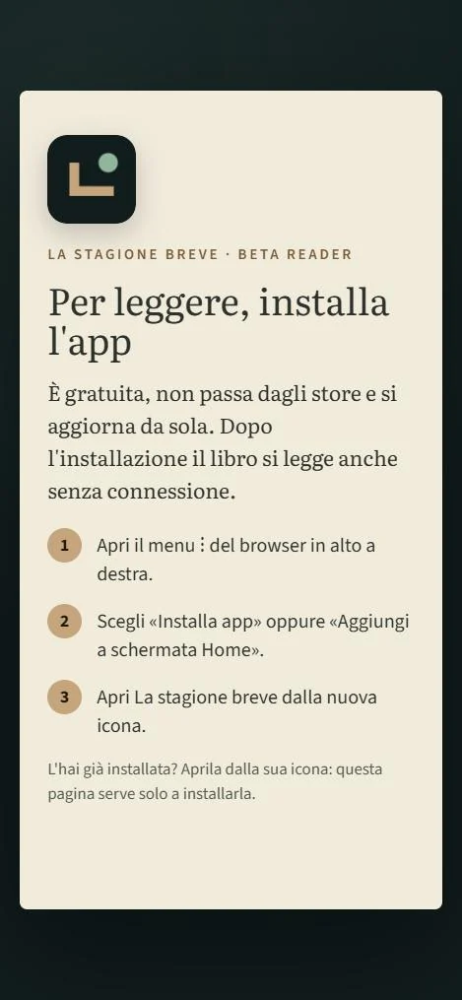
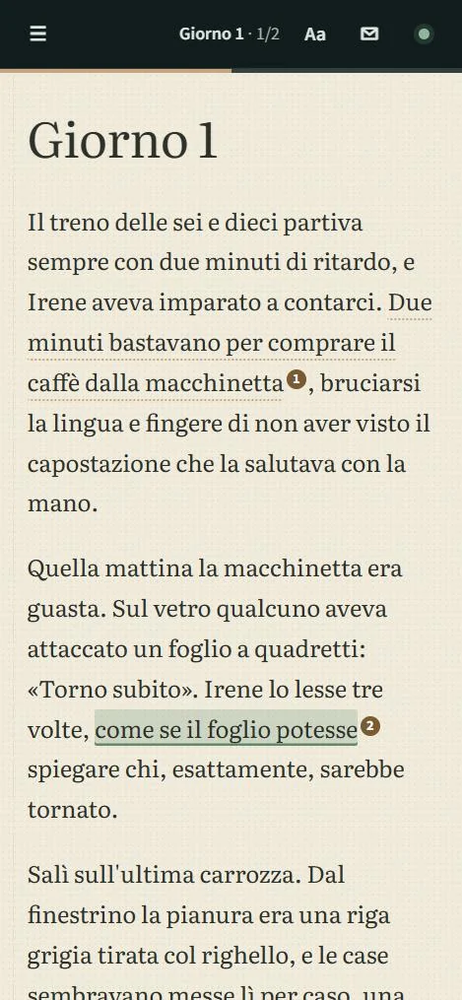
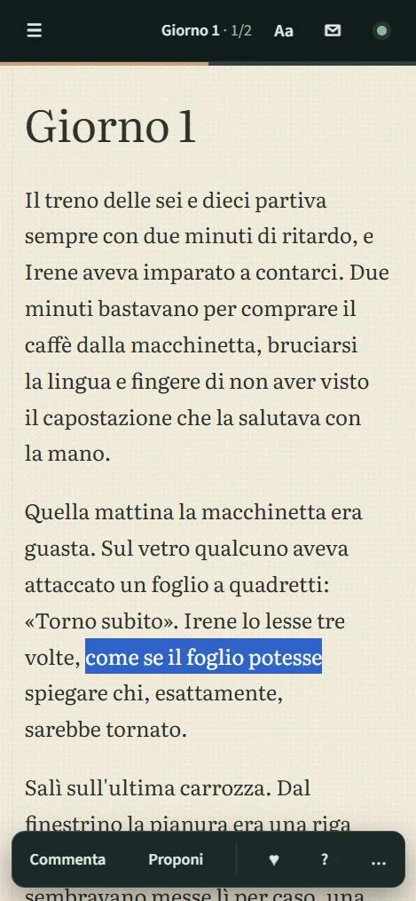
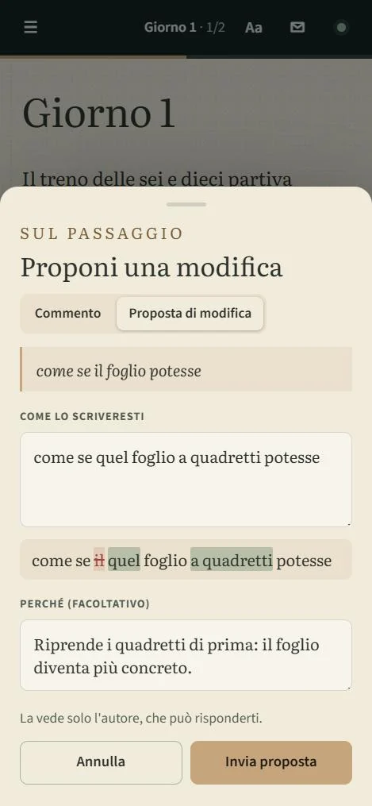
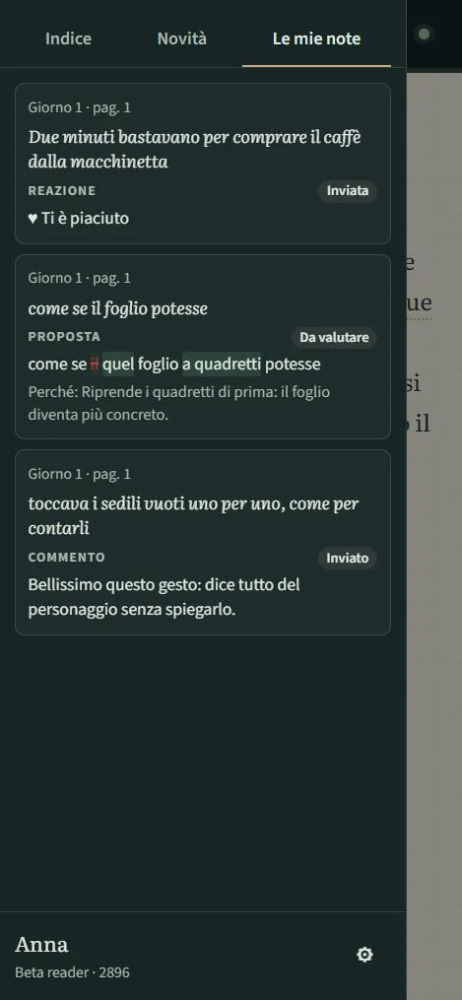
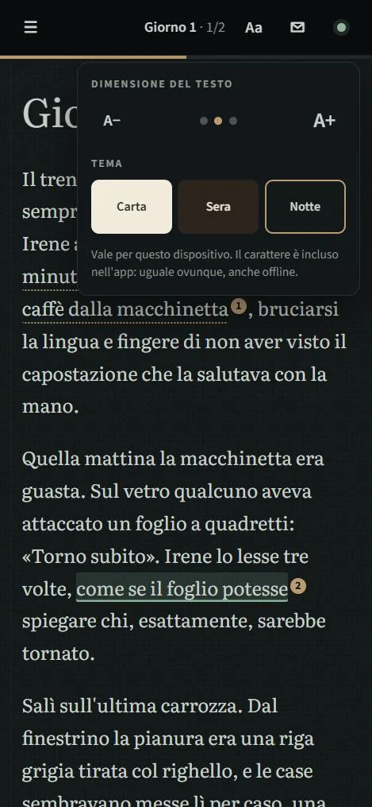
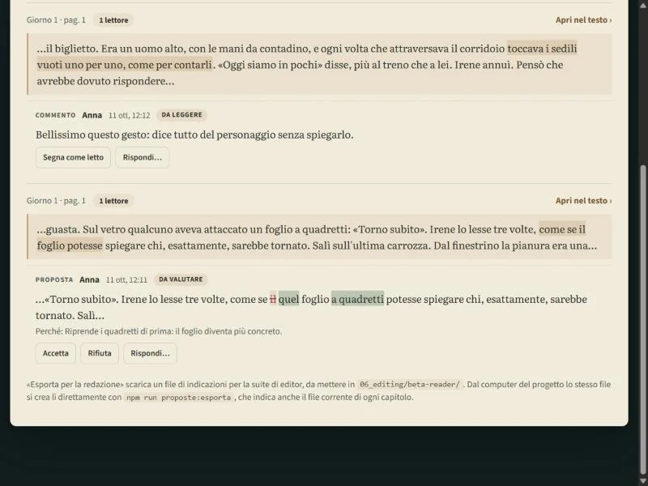
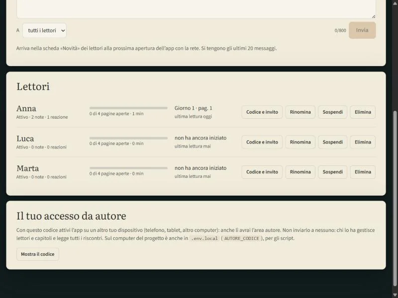

Il manoscritto in mano ai primi lettori, senza perderne il controllo
Prima di pubblicare un libro, un autore lo fa leggere a un gruppo ristretto di persone. Di solito significa spedire un PDF e raccogliere pareri sparsi tra email e messaggi. Beta Reader sostituisce tutto questo con un'app dedicata.
Il lettore riceve un link e un codice, installa l'app dal browser (non passa da nessuno store) e legge i capitoli che l'autore ha aperto per lui, anche senza connessione. Quando un passaggio lo colpisce, lo seleziona e lascia un commento, una reazione o una proposta di riscrittura. L'autore vede tutto raggruppato per passaggio e decide cosa accogliere.
The manuscript in the hands of its first readers, without losing control of it
Before publishing a book, an author has a small group of people read it. That usually means emailing a PDF and gathering opinions scattered across emails and messages. Beta Reader replaces all of that with a dedicated app.
The reader gets a link and a code, installs the app from the browser (no app store involved) and reads the chapters the author has opened for them, even offline. When a passage strikes them, they select it and leave a comment, a reaction or a rewrite proposal. The author sees everything grouped by passage and decides what to accept.
Leggere e annotare
Reading and annotating






Gestire lettori e riscontri
Managing readers and feedback


Schermate prese dall'app in esecuzione con un libro dimostrativo: testo, titolo e lettori sono inventati.
Screens taken from the running app with a demo book: text, title and readers are invented.
Dal link alla prima nota
- Riceve un link e un codice dall'autore, con un messaggio d'invito già pronto.
- Installa l'app dal browser: funziona su iPhone, Android, Windows e Mac. Nel browser non si legge, serve l'app.
- Inserisce il codice (serve la rete solo questa volta) e sceglie una password che resta sul dispositivo.
- Legge i capitoli aperti, anche offline, e annota: commento, proposta di modifica, oppure una reazione (mi piace, non mi è chiaro, qui mi annoio).
- Ritrova tutto in «Novità»: capitoli appena aperti, pagine aggiornate da rileggere, risposte e messaggi dell'autore.
From the link to the first note
- They receive a link and a code from the author, with a ready-made invitation message.
- They install the app from the browser: it works on iPhone, Android, Windows and Mac. Reading happens in the app, not in the browser.
- They enter the code (the only time a connection is needed) and choose a password that stays on the device.
- They read the open chapters, offline too, and annotate: a comment, an edit proposal, or a reaction (I like it, unclear, boring here).
- They find everything under “News”: newly opened chapters, updated pages to re-read, the author's replies and messages.
Cosa può fare, da solo
What they can do, on their own
Il server conserva file che non può leggere
Un manoscritto inedito è materiale delicato. Qui non c'è un database né un account di servizio: il libro è un insieme di file cifrati, e la cifratura avviene nel browser di chi scrive e di chi legge.
- 01Una chiave per capitolo. Un capitolo bloccato non ha la sua chiave in nessuna voce di lettore.
- 02Chiavi dal codice del lettore. Il server ne conosce solo un'impronta, usata per autorizzare le scritture.
- 03Riscontri riservati. Commenti e proposte li leggono solo l'autore e chi li ha scritti.
- 04Password locale. Protegge il codice sul dispositivo e non viaggia mai.
- 05Filigrana personale. Ogni pagina porta nome e codice del lettore.
The server holds files it cannot read
An unpublished manuscript is sensitive material. There is no database and no service account here: the book is a set of encrypted files, and encryption happens in the browser of whoever writes and whoever reads.
- 01One key per chapter. A locked chapter has its key in no reader's entry.
- 02Keys derived from the reader's code. The server only knows a fingerprint, used to authorise writes.
- 03Private feedback. Comments and proposals are readable only by the author and by whoever wrote them.
- 04Local password. It protects the code on the device and never travels.
- 05Personal watermark. Every page carries the reader's name and code.
In uso
L'app è attiva e viene usata per la lettura in anteprima di un romanzo in lavorazione. È uno strumento privato: non ha una pagina pubblica, si entra solo con il codice ricevuto dall'autore.
In use
The app is live and is being used for the preview reading of a novel in progress. It is a private tool: it has no public page, and you get in only with the code received from the author.